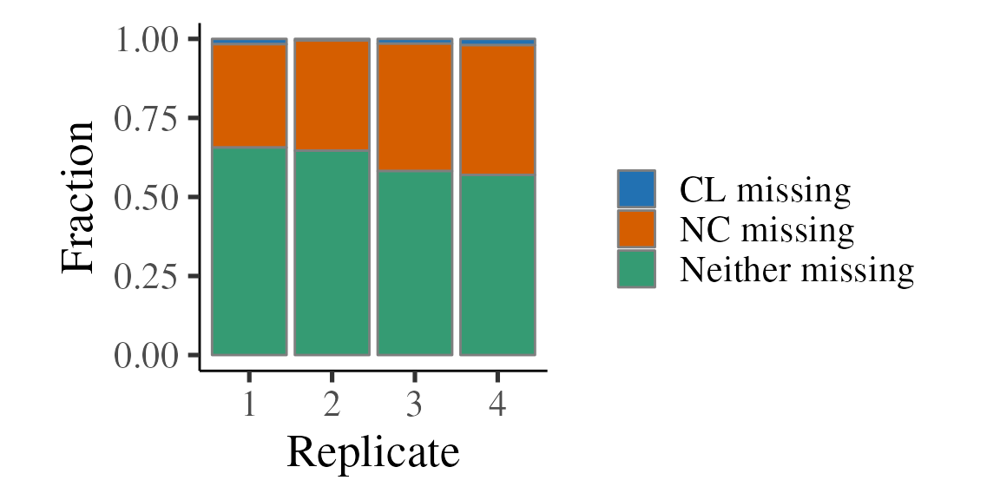

SILAC.RmdStable Isotope Labelling by/with Amino acids in Cell culture (SILAC) is a form of quantitative proteomics where different conditions are quantified in the same run by differential metabolic labelling of proteins using amino acids containing stable isotopes (Ong et al. 2002). A typical SILAC experiment involved growing cells in two different types of SILAC media, one containing ‘light’ arginine and lysine, and the other containing ‘heavy’ arginine and lysine. Over time the cells incorporate these light or heavy amino acids into their proteins which gives resulting downstream peptides different masses which can be detected by LC-MS.Initially designed to provide pairwise comparisons between cell cultures, it has now been extended to more than two labels and even whole organisms (Krüger et al. 2008).
This elegant experimental design enables quantification of peptide/protein abundance ratios between conditions with very little technical variation, since the samples from separate conditions are pooled as early as possible in the sample handling process. Furthermore, the use of different isotope labels has been extended to study the turnover of protein (e.g switch from one label to another) in pulsed SILAC, and relative turnover between conditions (e.g two condition on the same label and then switch each condition to a different label; requires triple SILAC).
The analysis of SILAC data is relatively straightforward, since technical noise is low and normalisation is not normally required. Typically, one is interested in the intensity (peak area or peak height depending on your PD settings) ratio of the light (L) and heavy (H) MS peaks for a given peptide. This ratio forms the quantification value which we wish to perform statistical tests and exploratory analysis on.
Before performing a SILAC experiment, it is necessary to confirm complete (e.g > 95%) incorporation of the supplemented isotopically labelled amino acids into the cellular proteome.
We do this with camprotR::estimate_incorporation() below. Calculating the incorporation for a given peptide is simple, e.g H/(H+L) for a typical two label experiment. However, for very highly incorporated samples, the true intensity of the L peptide ions will be close to zero, which can lead to erroneous assignment of other ions to the L peptide. This function supports the calculation of incorporation from defined mixes of heavy and light labelled material, which makes the estimation of incorporation rate more robust since both isotopes should exist for all peptides.
Here, heavy and light labelled cells were mixed 1:1.
Importantly, note that there is a good correlation between the light and heavy intensities, regardless whether either or both isotopes were from a spectrum match (the other option being a mass shift relative to the peptide-spectrum match (PSM) for the cognate isotope). This indicates that the quantification values are from true isotope pairs.
crap_fasta_inf <- system.file(
"extdata", "cRAP_20190401.fasta.gz",
package = "camprotR"
)
incorporation_results <- camprotR::estimate_incorporation(
# can replace with PD output using read.delim(PSMs.txt)
psm_input = psm_silac_p4,
# can replace with PD output using read.delim(PeptideGroups.txt)
peptide_input = pep_silac_p4,
crap_fasta = crap_fasta_inf,
mix = 1 # This incorporation test was performed with a 1:1 H/L mix
)
#> camprotR::silac_psm_seq_int output has changed.
#> Columns indicating whether quantification is from PSM are now prefixed with
#> "matched", not "Sequenced", and tallys of PSMs per isotope are included.
#> Interference is not included by default (set include_interference=TRUE)
#> Parsing features...
#> 470 features found from 100 master proteins => Input
#> 242 cRAP proteins supplied
#> 0 proteins identified as 'cRAP associated'
#> 470 features found from 100 master proteins => cRAP features removed
#> 306 features found from 93 master proteins => features without quantification removed
print(incorporation_results$HL_correlation)The median observed incorporation for the mixed sample is 50.8 at the peptide-level and 50.5 at the protein level. Correcting for the mixing proportions this gives us incorporation rate estimates just over 100%, which suggests the true incorporation rate is likely to be very close to 100%.
print(incorporation_results$peptide_incorporation)
#> `stat_bin()` using `bins = 30`. Pick better value with `binwidth`.
print(incorporation_results$protein_incorporation)
#> `stat_bin()` using `bins = 30`. Pick better value with `binwidth`.Now, onto some experimental data. Here, we process data from an OOPS (Queiroz et al. 2019) experiment designed to identify proteins that are significantly enriched upon UV crosslinking (CL) vs non-crosslinked control cells (NC). RNA-binding proteins (RBPs) should be much more abundant in CL samples, since this covalently crosslinks the RBPs to RNA, and retains them in the OOPS interface, from which the sample is taken. In total, we have 4 SILAC runs, representing 4 separate plates of U-2 OS cells. Two plates (replicate 1 & 2) were Heavy for CL and two plates (replicates 3 & 4) were Light for CL. This is called a ‘label’ swap/switch and helps to ensure the results are independent of the labelling scheme.
The first step is to read in the data and remove contaminant proteins and features without quantification data. These were defined using the cRAP database. Below, we parse the cRAP FASTA to extract the IDs for the cRAP proteins, in both ‘cRAP’ format and Uniprot IDs for these proteins.
# Load the cRAP FASTA used for the PD search
crap_fasta <- Biostrings::fasta.index(crap_fasta_inf, seqtype = "AA")
# Define a base R version of stringr::str_extract_all()
# to avoid loading the whole stringr package
str_extract_all <- function(pattern, string) {
gregexpr(pattern, string, perl = TRUE) %>%
regmatches(string, .) %>%
unlist()
}
# Extract the non-cRAP UniProt accessions associated with each cRAP protein
crap_accessions <- crap_fasta %>%
pull(desc) %>%
str_extract_all("(?<=\\|).*?(?=\\|)", .) %>%
unlist()We can then supply these cRAP protein IDs to camprotR::parse_features which will remove features which may originate from contaminants, as well as features which don’t have a unique master protein. See ?parse_features for further details, including the removal of ‘associated cRAP.’ parse_features will output messages about the number of features at each stage in the filtering.
# These files are part of the camprotR package
pep_data <- list(pep_oops_1, pep_oops_2, pep_oops_3, pep_oops_4)
names(pep_data) <- c('pep_1', 'pep_2', 'pep_3', 'pep_4')
pep_data_parsed <- lapply(
pep_data, function(infdata) {
parse_features(infdata,
silac = TRUE,
level = 'peptide',
crap_proteins = crap_accessions,
unique_master = FALSE)
}
)
#> Parsing features...
#> 550 features found from 101 master proteins => Input
#> 242 cRAP proteins supplied
#> 6 proteins identified as 'cRAP associated'
#> 526 features found from 99 master proteins => cRAP features removed
#> 525 features found from 98 master proteins => associated cRAP features removed
#> 355 features found from 91 master proteins => features without quantification removed
#> Parsing features...
#> 547 features found from 101 master proteins => Input
#> 242 cRAP proteins supplied
#> 8 proteins identified as 'cRAP associated'
#> 527 features found from 99 master proteins => cRAP features removed
#> 525 features found from 98 master proteins => associated cRAP features removed
#> 379 features found from 92 master proteins => features without quantification removed
#> Parsing features...
#> 580 features found from 101 master proteins => Input
#> 242 cRAP proteins supplied
#> 9 proteins identified as 'cRAP associated'
#> 558 features found from 98 master proteins => cRAP features removed
#> 558 features found from 98 master proteins => associated cRAP features removed
#> 397 features found from 94 master proteins => features without quantification removed
#> Parsing features...
#> 683 features found from 102 master proteins => Input
#> 242 cRAP proteins supplied
#> 9 proteins identified as 'cRAP associated'
#> 657 features found from 99 master proteins => cRAP features removed
#> 655 features found from 98 master proteins => associated cRAP features removed
#> 502 features found from 98 master proteins => features without quantification removedNext, we add new columns to describe the intensities with respect to the CL and NC conditions, based on how H & L map to CL & NC for each replicate.
pep_data_parsed <- lapply(names(pep_data_parsed), function(experiment) {
# In this case, the replicate number is after the '_' so we extract like so
rep_n <- sapply(strsplit(experiment, split='_'), '[[', 2)
.data <- pep_data_parsed[[experiment]]
# Identify the column names for the light and heavy intensities
# (these names are not consistent between samples, yours may be different!)
abundance_light_col <- grep('Abundance.*.Light.Sample', colnames(.data), value = TRUE)
abundance_heavy_col <- grep('Abundance.*.Heavy.Sample', colnames(.data), value = TRUE)
# Label-swap info in cell above defines whether heavy or light is CL
cl_col <- ifelse(rep_n %in% 1:2, abundance_heavy_col, abundance_light_col)
nc_col <- ifelse(rep_n %in% 1:2, abundance_light_col, abundance_heavy_col)
.data <- .data %>%
# Add new columns with CL or NC intensities
mutate('CL' = !!sym(cl_col),
'NC' = !!sym(nc_col),
replicate = rep_n) %>%
# And subset to these columns
select(Master.Protein.Accessions, CL, NC, replicate, Sequence, Modifications)
return(.data)
})
# Re-annotate with names
names(pep_data_parsed) <- names(pep_data)Having added the replicate number as a column previously, we bind together the rows from all replicates and calculate the CL/NC ratio using camprotR::get_ratio, which will also add a missing column to describe whether one of the quantification values is missing.
abundance_data_complete <- do.call('rbind', pep_data_parsed) %>%
remove_rownames()
ratios <- abundance_data_complete %>%
filter((is.finite(CL) | is.finite(NC))) %>%
mutate(CL = log2(CL), NC = log2(NC)) %>%
get_ratio(CL, NC, bind = TRUE) Below, we tally and plot the missing values per replicate for each method. Note that ~40% of peptides have a missing quantification value and it’s much more likely to be missing in NC than CL. This is what we expect since the OOPS method is designed to capture RBPs that are UV crosslinked to RNA, so without crosslinking, there should be very little protein present in the interface.
ratios %>%
group_by(replicate, missing) %>%
tally() %>%
ggplot(aes(x = replicate, y = n, fill = missing)) +
geom_bar(stat = 'identity', position = 'fill', colour = 'grey50') +
theme_camprot(border = FALSE) +
labs(x = 'Replicate', y = 'Fraction') +
scale_fill_manual(values = get_cat_palette(3), name = '')
ratios %>%
group_by(replicate, missing) %>%
tally() %>%
ggplot(aes(x = replicate, y = n, fill = missing)) +
geom_bar(stat = 'identity', position = 'stack', colour = 'grey50') +
theme_camprot(border = FALSE) +
labs(x = 'Replicate', y = 'Peptides') +
scale_fill_manual(values = get_cat_palette(3), name = '')Next, we plot the distribution for the ratios. Note that there are at least two populations, with the clearest two being:
We expect that population 1 are the proteins which are not RBPs and population 2 are the true RBPs.
ratios %>%
ggplot(aes(x = ratio, colour = replicate)) +
geom_vline(xintercept = 0, linetype = 2, colour = 'grey50') +
geom_density() +
theme_camprot(base_size = 15) +
labs(x = "Ratio CL:NC (Log2)", y = "Density", colour = "Replicate") +
scale_colour_manual(values = c(get_cat_palette(4)))
#> Warning: Removed 638 rows containing non-finite values (stat_density).We can also consider the relationship between the CL and NC intensities. Again, we see these two populations, with the first being on the dashed line (equality).
ratios %>%
ggplot(aes(x = CL, y = NC)) +
geom_point(aes(colour = replicate)) +
geom_abline(slope = 1, linetype = 2, colour = 'grey50') + # line at CL==NC
theme_camprot(base_size = 15, border = FALSE) +
scale_colour_manual(values = c(get_cat_palette(4)))
#> Warning: Removed 638 rows containing missing values (geom_point).Given the large number of missing values, there is a concern that protein abundance in NC may be very low and, therefore, that quantification values from NC peptides identified by mass shift rather than peptide spectrum matching could be falsely assigning ions to peptides. Note that peptide sequences identified by PSM are referred to as having been ‘sequenced’ in some code blocks below.
To get the information about what quantification values come from PSMs, we need to interrogate the PSM-level output.
# These files are part of the camprotR package
psm_data <- list(psm_oops_1, psm_oops_2, psm_oops_3, psm_oops_4)
names(psm_data) <- c('psm_1', 'psm_2', 'psm_3', 'psm_4')Below we use camprotR::silac_psm_seq_int to identify which quantification values are from PSMs. This function also extracts the interference/co-isolation value for the PSMs, which is not available through the peptide-level output, though we won’t use that information here.
psm_matched_data <- lapply(
psm_data, function(x) {
# If you export from PD including the 'Sequence' column,
# you don't need this step.
# Below, we convert the Annotated.Sequence column into a Sequence column
x$Sequence <- sapply(strsplit(x$Annotated.Sequence, split = '\\.'), '[[', 1) %>%
toupper()
camprotR::silac_psm_seq_int(x, sequence_col = 'Sequence')
}
)
#> camprotR::silac_psm_seq_int output has changed.
#> Columns indicating whether quantification is from PSM are now prefixed with
#> "matched", not "Sequenced", and tallys of PSMs per isotope are included.
#> Interference is not included by default (set include_interference=TRUE)
#> camprotR::silac_psm_seq_int output has changed.
#> Columns indicating whether quantification is from PSM are now prefixed with
#> "matched", not "Sequenced", and tallys of PSMs per isotope are included.
#> Interference is not included by default (set include_interference=TRUE)
#> camprotR::silac_psm_seq_int output has changed.
#> Columns indicating whether quantification is from PSM are now prefixed with
#> "matched", not "Sequenced", and tallys of PSMs per isotope are included.
#> Interference is not included by default (set include_interference=TRUE)
#> camprotR::silac_psm_seq_int output has changed.
#> Columns indicating whether quantification is from PSM are now prefixed with
#> "matched", not "Sequenced", and tallys of PSMs per isotope are included.
#> Interference is not included by default (set include_interference=TRUE)Then we bind together the spectrum matched data into one data frame, ready to merge with the peptide quantification.
all_psm_matched_data <- psm_matched_data %>%
names() %>%
lapply(function(psm_name) {
rep_n <- sapply(strsplit(psm_name, split='_'), '[[', 2)
print(rep_n)
psm_matched_data[[psm_name]] %>%
mutate(replicate = rep_n)
}) %>%
bind_rows()
#> [1] "1"
#> [1] "2"
#> [1] "3"
#> [1] "4"Below, we merge the quantification and PSM information and make new columns to describe whether the CL/NC quantification is from a PSM.
# merge the matched information and add new columns for the CL/NC sequenced information
ratios_matched <- ratios %>%
# Update the modifications column for the peptide object so it
# doesn't include SILAC modifications
mutate(Modifications = remove_silac_modifications(Modifications, level = 'peptide')) %>%
# Update the sequence column to all uppercase
rowwise() %>%
mutate(Sequence = toupper(Sequence)) %>%
# Merge with the sequenced information
merge(all_psm_matched_data,
by = c('Sequence', 'Modifications', 'replicate')) %>%
# Add new columns with CL/NC and CL/NC sequenced information
mutate('Matched_CL' = ifelse(replicate %in% 1:2,
matched_Heavy, matched_Light),
'Matched_NC' = ifelse(replicate %in% 1:2,
matched_Light, matched_Heavy)) %>%
# And subset to these columns
select(Master.Protein.Accessions,
Sequence,
Modifications,
replicate,
ratio,
CL,
NC,
Matched_CL,
Matched_NC,
missing)
# Add a single column to describe the sequenced information
ratios_matched <- ratios_matched %>%
mutate(
matched = interaction(Matched_CL, Matched_NC),
matched = factor(recode(matched,
'TRUE.TRUE'='Both spectrum matched',
'TRUE.FALSE'='CL spectrum matched',
'FALSE.TRUE'='NC spectrum matched'),
levels = c('Both spectrum matched',
'CL spectrum matched',
'NC spectrum matched'))
)Below, we consider how often the ratio comes from a peptide where both CL and NC were sequenced, or just one sequenced, and the other one therefore being by mass shift. Note that a minority of peptides have both CL and NC sequenced and the majority are just sequenced in CL.
p <- ratios_matched %>%
filter(is.finite(ratio)) %>%
group_by(replicate, matched) %>%
tally() %>%
ggplot(aes(x = replicate, y = n, fill = matched)) +
theme_camprot(border = FALSE) +
scale_fill_manual(values = get_cat_palette(3), name = '') +
xlab('Replicate')
p1 <- p +
geom_bar(stat = 'identity', colour = 'grey50') +
ylab('Peptides')
print(p1)
p2 <- p +
geom_bar(stat = 'identity', position = 'fill', colour = 'grey50') +
ylab('Fraction of peptides')
print(p2)We can then see consider how the CL vs NC correlation relates to the ‘sequenced’ information. Note that the correlation is much poorer when just CL is sequenced. This is a concern, since one plausible explanation would be that many of the NC quantification values obtained when CL is identified by spectrum matching, but NC is identified by mass shift are from ions erroneously assigned to a peptide.
ratios_matched %>%
filter(is.finite(CL), is.finite(NC)) %>%
group_by(matched) %>%
summarise(cor = cor(CL, NC))
#> # A tibble: 3 × 2
#> matched cor
#> <fct> <dbl>
#> 1 Both spectrum matched 0.554
#> 2 CL spectrum matched 0.409
#> 3 NC spectrum matched 0.613
ratios_matched %>%
ggplot(aes(x = CL, y = NC)) +
geom_point(aes(colour = replicate), size = 0.5) +
geom_abline(slope = 1, linetype = 2, colour = 'grey50') + # line at CL==NC
theme_camprot(base_size = 15, border = FALSE) +
facet_wrap(~ matched) +
scale_x_continuous(breaks = seq(14, 26, 4), limits = c(14, 26)) +
scale_y_continuous(breaks = seq(14, 26, 4), limits = c(14, 26)) +
scale_colour_manual(values = get_cat_palette(4))
#> Warning: Removed 628 rows containing missing values (geom_point).Whenever a SILAC experiment is performed where complete absence of a protein in one condition is likely, it is recommended to perform this QC step. If the correlation is very poor when just one condition is spectrum matched, it may be necessary to exclude these peptides.
In this vignette example, we will proceed with all the peptides, but retain information about the spectrum matching in the protein quantification, should we need to investigate this further.
Next, we make an MSnSet from the peptide-level CL/NC ratios.
# Remove peptides without both CL + NC quantified
flt_ratios <- ratios_matched %>%
filter(is.finite(ratio))
# Create a wide table with unique ids as row names
flt_ratios_wide <- flt_ratios %>%
select(Master.Protein.Accessions, Sequence, Modifications,
replicate, Matched_NC, ratio) %>%
pivot_wider(names_from = "replicate", values_from = c("Matched_NC", "ratio")) %>%
unite(id, Sequence, Modifications, remove = FALSE) %>%
column_to_rownames(var = "id")
# Create expression matrix (exprs)
exprs_data <- flt_ratios_wide %>%
select(matches("ratio_[1-4]")) %>% # select unique ids and ratio data
as.matrix()
# Create feature metadata data frame (fData)
feat_data <- flt_ratios_wide %>%
select(!matches("ratio")) # select unique ids and everything but ratio data
# Create MSnSet
pep_res <- MSnSet(exprs = exprs_data, fData = feat_data)
# Add replicate number to phenotype data
pData(pep_res)$Replicate <- 1:ncol(exprs_data)
pep_res
#> MSnSet (storageMode: lockedEnvironment)
#> assayData: 454 features, 4 samples
#> element names: exprs
#> protocolData: none
#> phenoData
#> sampleNames: ratio_1 ratio_2 ratio_4 ratio_3
#> varLabels: Replicate
#> varMetadata: labelDescription
#> featureData
#> featureNames: AAAAAAAAAAAAAAAGAGAGAK_ AAAAAAALQAK_ ... YVSSLTEEISK_
#> (454 total)
#> fvarLabels: Master.Protein.Accessions Sequence ... Matched_NC_3 (7
#> total)
#> fvarMetadata: labelDescription
#> experimentData: use 'experimentData(object)'
#> Annotation:
#> - - - Processing information - - -
#> MSnbase version: 2.18.0Then we summarise the peptide-level rations to protein-level ratios. Here, we’ll use the median and demand at least two ratios per protein.
# see ?camprotR::restrict_features_per_protein for more details
# In particular, note that the function will replace some quantification values
# with NA, while removing some other peptides entirely
pep_res_flt <- camprotR::restrict_features_per_protein(
pep_res,
min_features = 2,
plot = TRUE
)
#> `stat_bin()` using `bins = 30`. Pick better value with `binwidth`.
prot_res <- combineFeatures(
pep_res_flt,
groupBy = fData(pep_res_flt)$Master.Protein.Accessions,
method = "median",
na.rm = TRUE
)
#> Your data contains missing values. Please read the relevant section in
#> the combineFeatures manual page for details on the effects of missing
#> values on data aggregation.
print(nrow(pep_res))
#> [1] 454
print(nrow(pep_res_flt))
#> [1] 417
print(nrow((prot_res)))
#> [1] 59Note that the summarisation is occurring on the expression data, but will affect the feature data too (the values in the first feature are taken). If we want to retain information about whether the peptide was ‘matched’ in both conditions, we will need to generate this ourselves and re-attach to the MSnSet.
prot_matched_nc <- fData(pep_res_flt) %>%
select(-Sequence, -Modifications) %>%
pivot_longer(cols = -Master.Protein.Accessions, values_to = 'matched_NC') %>%
group_by(Master.Protein.Accessions) %>%
filter(!is.na(matched_NC)) %>%
summarise(any_not_matched = any(!matched_NC))
fData(prot_res) <- fData(prot_res) %>%
rownames_to_column(var = "id") %>%
left_join(prot_matched_nc, by = "Master.Protein.Accessions") %>%
column_to_rownames(var = "id")We can now inspect the completeness of our protein-level data using MSnbase::plotNA(). In this case 18/59 proteins have complete data (all 4 replicates) and the expression matrix is 63% complete overall.
MSnbase::plotNA(prot_res, pNA = 0)To identify proteins with significantly increased abundance in CL vs NC, we will use DEqMS (Zhu et al. 2020), which you can think of as an extension of limma (Ritchie et al. 2015) specifically for proteomics.
The next step is taken from the DEqMS vignette. The idea is that we want to create an MArrayLM object as per normal limma analysis and then add a $count column to the MArrayLM object and then use the spectraCounteBayes function to perform the Bayesian shrinkage using the count column rather than the $Amean column. In our case, count is the number of peptides per protein. In the DEqMS paper, they suggest that the best summarisation metric to use is the minimum value across the samples.
dat <- prot_res %>%
filterNA(pNA = 0.5) %>% # select proteins in min. 2/4 reps
exprs()
design <- cbind(Intercept = rep(1, ncol(dat)))
fit <- lmFit(dat, design)
efit <- eBayes(fit)
# Obtain the min peptide count across the samples
min_pep_count <- camprotR::count_features_per_protein(pep_res) %>%
group_by(Master.Protein.Accessions) %>%
summarise(min_pep_count = min(n))
# add the min peptide count
efit$count <- min_pep_count %>%
filter(Master.Protein.Accessions %in% rownames(efit$coefficients)) %>%
pull(min_pep_count)
# run DEqMS
efit_deqms <- suppressWarnings(spectraCounteBayes(efit))Unfortunately, since we have so few proteins in this toy dataset, the relationship between PSM count and variance is not apparent, though it should be with a full-scale proteomics experiment.
# Diagnostic plots
VarianceBoxplot(efit_deqms, n = 30, xlab = "PSM count")Below, we summarise the number of proteins with statistically different abundance in CL vs NC and plot a ‘volcano’ plot to visualise this. Note that all 24 proteins with a statistically significant change are increased in CL, so the plot looks more like a fire-hose than a volcano!
deqms_results <- outputResult(efit_deqms, coef_col = 1)
table(ifelse(deqms_results$sca.adj.pval < 0.01, 'sig.', 'not sig.'),
ifelse(deqms_results$logFC > 1, 'Higher in CL', 'Lower in CL'))
#>
#> Higher in CL Lower in CL
#> not sig. 1 19
#> sig. 24 0
deqms_results %>%
ggplot(aes(x = logFC, y = -log10(sca.P.Value), colour = sca.adj.pval < 0.01)) +
geom_point() +
theme_camprot() +
scale_colour_manual(values = c('grey', get_cat_palette(2)[2]), name = 'CL vs NC Sig.') +
labs(x = 'CL vs NC (Log2)', y = '-log10(p-value)')Finally, we can explore and export out results. Importantly, the $t, $P.Value and $adj.P.Val columnts are from limma. The columns prefixed with sca are the from DEqMS.
head(deqms_results)
#> logFC AveExpr t P.Value adj.P.Val B gene
#> P15880 5.843093 5.843093 19.119852 1.889018e-33 8.311680e-32 174.55385 P15880
#> Q92945 5.688033 5.688033 18.612464 1.310927e-32 2.884040e-31 165.03692 Q92945
#> P36578 3.775106 3.775106 12.352958 4.392638e-21 3.865522e-20 68.68522 P36578
#> P40429 3.126439 3.126439 8.859768 6.740128e-14 3.295174e-13 31.91773 P40429
#> P61254 4.865011 4.865011 11.256688 7.293579e-19 5.348624e-18 55.79930 P61254
#> O43390 5.876200 5.876200 16.652098 3.151435e-29 4.622105e-28 130.54854 O43390
#> count sca.t sca.P.Value sca.adj.pval
#> P15880 4 39.45864 1.101209e-37 4.845318e-36
#> Q92945 5 29.40900 6.460325e-32 1.421272e-30
#> P36578 3 20.64553 3.275304e-25 4.803779e-24
#> P40429 1 16.21849 1.187789e-20 1.306568e-19
#> P61254 1 14.41418 1.776341e-18 1.563180e-17
#> O43390 2 12.80037 9.098531e-17 6.672256e-16